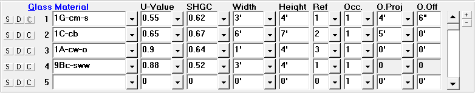

Glass (Room Data, Default Room Data Windows) |
  
|
Glass (Room Data, Default Room Data Windows) |
|

These inputs should be used for windows, skylights, sliding glass doors, and French doors. If the glass is shaded by an overhang, be sure to enter the shading reference here and describe the overhang on the General Project Data window, Design Data folder. Note that each glass section has a wall reference number. This tells Rhvac which direction the window faces and allows the program to subtract the glass area from the appropriate wall. Directly below the word Glass is a column of numbers; these numbers are the numbers of the various glass entries in the room and cannot be changed. Note that the term "double pane" refers to two sheets of glass with dead air space between them, while the term "triple pane" refers to three sheets of glass with dead air space between them. Double pane and triple pane windows are also called double glazed and triple glazed.
S Button (Save Material to Default Room): Saves the material to the Default Room Data window. If the material is already in the list of default materials it will be updated if needed.
D Button (Insert Default Material): Copies the default material from the Default Room Data window to the Room Data window. If more than one default material has been defined, a popup menu will let you select which of your default materials to copy. For row 1, this button works like the Copy Above or Default and Room Dimension menu item and toolbar button, while on rows 2 and up it works like the Insert Only Default Room Data menu item and toolbar button.
C Button (Copy Above Material): Copies the material from the above row. This button is disabled for material number 1. For rows 2 and up, works the same as the Copy Above or Default and Room Dimension menu item and toolbar button.
Glass Material: This entry corresponds to the nine types of glass allowed by Manual J. Click on the drop-down list arrow to display the Glass Material dialog. Note that when you type or select a valid glass construction code, the reference defaults to 1.
U-Value: If you enter one of the standard construction codes and glass types Rhvac will display a suggested U-Value for you. This U-Value corresponds to the U-Values listed in Table 2 (pages 65-67) of Manual J. You also have the option of entering your own U-Value. Rhvac will then use the U-Value you entered when calculating the heat transfer due to glass sections. Note that the U-Value is determined by dividing the number 1 by the R-value. The valid range of inputs for this field is 0.000 to 3.000 Btuh/(sq. ft. F).
Width and Height: The width and height of the window or glass door should be measured from the inside of the frame and should include the material (either wood or metal) that surrounds the glass. In cases where the window is not rectangular and it is not possible to give a single width and height, you should consider entering the height as 1 foot and the width as the actual area. The main point to remember is that the product of the glass height and width entries should be equal to the actual window or glass door area including the frame. The glass length and width can be 0.0 to 999.9 feet each. Note that the area entered here will be subtracted from the wall area of the reference wall.
Reference (Ref): This entry is a number that corresponds to one of the walls entered above. Every glass entry should have a wall reference number. This number tells Rhvac what direction the glass faces (which is critical when determining the cooling load) as well as allowing the program to subtract the total glass area from the appropriate wall. (Be sure the area of the glass entry does not exceed the wall area!) Valid wall reference numbers are 1 to 20. Remember that Construction Material types 7A - 7L are skylights and valid roof reference numbers are 1 to 8. Note that when you type or select a valid glass construction code, the reference defaults to 1.
If you are entering a skylight the wall reference number will actually be a roof reference number. Remember that glass entries will be skylights if the construction type is skylight specific. The area of the skylight will be subtracted from the area of the roof. Note that shading coefficients 49, 53, and 57 correspond to horizontal roofs - so the roof direction for these three shading coefficients must be "UP". But for other skylight tilt angles, you must specify a roof direction corresponding to the direction the skylight faces. If you do not know which direction the skylight faces you should use northeast to provide a mid range value. East and west facing skylights have the highest HTM values while north facing skylights have the lowest HTM values.
If you are entering a glass wall, you will still have to define a wall facing the correct direction. When you define this wall, make sure the gross area of the wall exactly equals the gross area of the glass. This will cause the Rhvac program to correctly calculate the solar gain and heat loss of the glass wall. If the glass entry is surrounded by two different wall types then you should enter it in two parts corresponding to each wall type. For example, suppose you entered a sliding glass door on a building that had a four foot high face brick portion. The sliding glass door would then be entered as two glass sections; the first door being a four foot section referencing the face brick wall and the rest of the sliding glass door referencing the wall without the face brick section. Whenever you enter glass doors or windows in sections be sure the total area of the sections adds up to the actual area of the glass window or door.
Solar Heat Gain Coefficient (SHGC): Specifies the generic or NFRC-rated solar heat gain characteristic of the glass. Lower numbers mean that the glass produces less solar gain..
Occurrences (Occ): Determines the number of times this glass occurs in the wall or roof. The normal value for this input is "1". But if you have a glass that occurs several times in the same wall or roof you can enter the glass only once and enter the number of occurrences of the glass here. The maximum allowed value is 99.
Overhang Projection and Offset (O.Proj and O.Off): These inputs are only used if there is an external overhang installed over the window. The overhang projection represents the maximum horizontal distance in feet that the overhang projects out from the glass. The overhang offset represents the distance that the overhang is above the top of the glass. If the overhang is directly above the window, the offset should be zero. If the glass is a skylight, both of these inputs must be zero.
Scrollbar: Use the scrollbar to scroll up and down through the list of glass items for the room.
Plus and Minus Buttons: Click the plus and minus buttons to increase or decrease the number of glass items visible at a time.